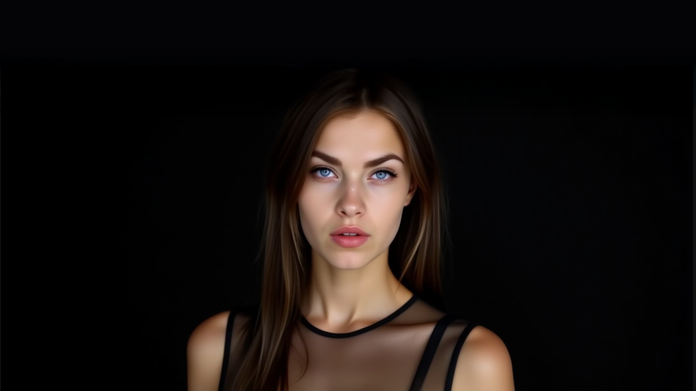

Paulina Dots is not just a virtual model – she is the embodiment of synthetic elegance, narrative power, and digital innovation. Powered by artificial intelligence and designed to transcend the limitations of physical media, Paulina leads a new movement where fashion, performance, and emotion blend into immersive, algorithmically refined experiences.
Every project involving Paulina is a carefully curated experiment between aesthetic rules and technological chaos. From hyperrealistic photoshoots to cinematic digital scenes, Paulina Dots redefines what it means to be iconic in the post-human landscape.
